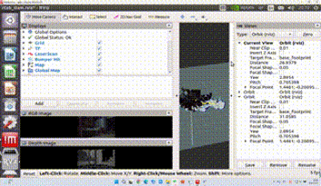
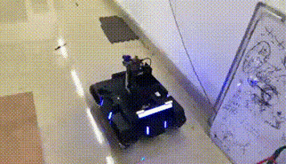
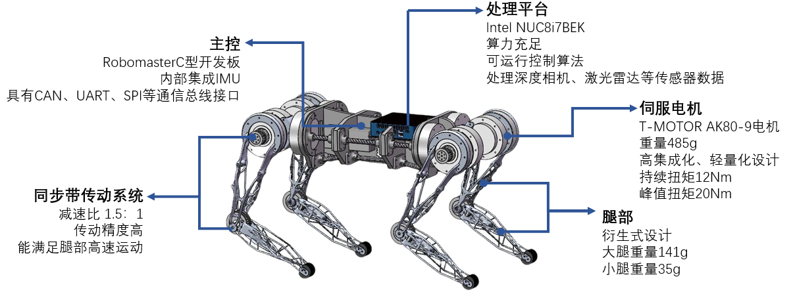

Yitong WangBachelor of Engineering, SCUTDepartment of Industrial Equipement and Control Engineering School of Mechanical and Automotive Engineering South China University of Technology Minor:Computer Science Email: ytwangcs [at] gmail [dot] com CV:here |
|
Bio
Yitong has just got his Bachelor of Engineering at School of Mechanical and Automotive Engineering SCUT, with a minor in Computer Science. His research interests include Robotics, Control, Perception and Machine Learning.He used to be a member of RobotLab at South China University of Technology. He is also the Program Leader of Robot Competition Team at Season 2020-2021. Besides, he is also very interested in photography, click here to view some of his photographic works.
Research Interests
- Robotics (Navigation, Perception and Control)
- Machine Learning (Reinforcement Learning and Deep Learning)
Awards / Honors
1st Prize in RoboMaster Championship 2021-083rd Prize in ICRA2021, AI Challenge 2021-06
University Scholarship by SCUT 2020-12
Merit Student of SCUT 2020-12
1st Prize in RoboCon Quadruped Robot Simulation Competition 2020-05
2nd Prize in 32th Chinese Physics Olympiad 2017-09
3rd Prize in 31th Chinese Physics Olympiad 2016-09
Projects

|
Intelligent Plant Incubator [Code] |
|  |
Research on Cruise Inspection of Industrial Process by Autonomous Robots |
|  |
Task collaboration under dual-robot rules based on reinforcement learning [Code] |

|
National Undergraduate Training Program for Innovation
|
|  |
SRP: Design and Control Algorithm Simulation of Bionic Quadruped Robot [Code] |
Experience
|
National Univeristy of Singapore, Singapore School of Computing Summer Workshop 2022 Cluster:AI & Fintech Theme:Intelligent Incubator Advisor: Colin TAN, |
|
|
Engine Plant of Dongfeng Commercial Vehicle Co.,Ltd, Wuhan, China Processing Intern, Summer 2021 Mentors: Xizhi Hu |
|
|
Imperial College London, London, UK Student of Master Class "Robotics, AI and iOT", Winter 2021 Mentors: Penny Lo |
|
|
Botai Robot(Foshan, Shunde District) Technology Co.,Ltd, Foshan, China Algorithm Intern, Winter 2021 Collaborator: Situ Manhao |


Selected Publications
Temporarily empty~